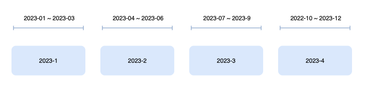
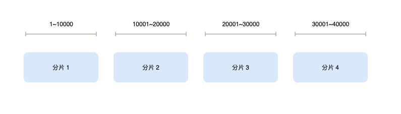

前言
分库分表是面向海量数据、高并发系统设计的屠龙技之一，而分片键的选择、设计正是入门这门屠龙技的基础。
分片键是什么？
先看看业内的回答
Shardingsphere：用于将数据库（表）水平拆分的数据库字段
SingleStore：The shard key is a table column or multiple columns used to control how the rows of that table are distributed
MongoDB：The shard key is either a single indexed field or multiple fields covered by a compound index that determines the distribution of the collection’s documents among the cluster’s shards.
几者的说法基本一致，简单总结一下：分片键是用于决定数据会被分布在哪个分片中的字段。
比如在关系型数据库中，它通常是一个或多个列字段。
分片键算法
分片键决定了数据会被分布在哪个分片，实际就是根据分片键的值计算出数据所分布的分片 ID.
这个计算指的就是分片键算法，即 f(shardKey) = shardID，常见的算法有三种
- Range
- Hash
- Lookup
Range
范围分片算法，按照字段的取值范围来计算数据所属分片
| 优点 | 1. 实现简单2. 分片键范围查询效率高3. 支持动态分片（即到达一个范围自动创建一个分片），扩容简单 |
| 缺点 | 1. 数据热点问题，某个范围的数据可能很大或很小2. 不具备写分散性 |
| 适用场景 | 1. 数据量大，需要范围查询 |
常见的有时间范围分片，下面的例子就展示了一个根据当前季度来计算分片的示例

| 范围 | 分片 ID |
|---|---|
| 2023-01 ~ 2023-03 | 2023-1 |
| 2023-04 ~ 2023-06 | 2023-2 |
| 2023-07 ~ 2023-09 | 2023-3 |
| 2023-10 ~ 2023-12 | 2023-4 |
| … | … |
按照某个数字的值范围来计算分片也经常会遇到，如下图所示

| 范围 | 分片 ID |
|---|---|
| [1, 10000) | 1 |
| [10001, 20000) | 2 |
| [20001, 30000) | 3 |
| [30001, 40000) | 4 |
| … | … |
Hash
Hash 算法的定义很简单：输入任意关键字，得到一个固定长度输出。在分库分表中，输入关键字指的是分片键对应的字段值，输出对应的是表示分片的 ID。
| 优点 | 1. 数据分散均匀 |
| 缺点 | 1. 分片扩容复杂，因为需要重新分布数据2. 不适合范围查询 |
| 适用场景 | 1. 并发量大2. 数据量大，随机读取性大 |
举个例子：将订单分为 4 个库，分片键是订单 ID，哈希算法是求余，那么可以得到以下分片结果
| 订单 ID | 求余 | 分片 ID |
|---|---|---|
| 1 | 1 % 4 | 1 |
| 2 | 2 % 4 | 2 |
| 3 | 3 % 4 | 3 |
| 4 | 4 % 4 | 0 |
| 5 | 5 % 4 | 1 |
| … | … | |
| X | X % 4 | (X % 4) |
Lookup
也称之为目录映射或查找映射，其实就是直接定义分片和分片键值之间的映射关系，将其维护在配置或数据库中，是一种静态分片
| 优点 | 1. 实现简单，直接定义映射关系即可 |
| 缺点 | 1. 配置错误时会出现异常 |
| 适用场景 | 1. 适合分片键是枚举值的场景 |
比如为了满足不同国家对数据存储的要求，需要将数据按国家进行分片，由于国家字段值并不多的，我们可以做简单的映射：中国=分片 1、美国=分片2、其他=分片3。
分片键选择
- 使用高频字段
一旦分库分表后，SQL 只有带上分片键字段才能被高效执行。
没法带上分片键的场景会导致全路由（即在所有的分片中执行），性能一般会差一点，但不是主要的问题。
全路由主要的问题是导致扩展力受限：假设在极端情况下所有的 SQL 都需要全路由，这样每个库占用的连接数都一样，就导致了没法通过增加数据库实例来提高连接数上限。
选择业务中的高频字段作为分片键可以保证大多数的 SQL 都能带上分片键高效执行，有效提高分片键的命中率。
- 基数大
一个基数大的分片键可以为未来的扩展保留足够的空间，这是因为分片键的基数决定了可以创建的最大分片数量。
- 稳定
更换分片键需要重新分布数据，成本和复杂度都很高，为此要尽量选择稳定的分片键
- 可以尽量保证数据分布均匀
如果数据分布不均匀会导致
- 会导致某个分片的数据存储增长更快，存储压力大，极有可能再次面临分库分表的问题
- 会导致某个分片接受的读、写流量更大，存在热点访问问题
- 可以尽量保证事物在同一个分片
事物都在一个分片内执行是最简单高效的
实践
分片键的选择本质上是在做一个权衡，以电商业务中常见的订单为例，假设现在有三个选择
- 用户 ID
- 订单号
- 创建时间
| 分片键 | 算法 | 可靠性 | 数据分布 | 字段使用频次 | 扩容 |
|---|---|---|---|---|---|
| 用户 ID | Hash | 假设分为 n 个库，其中 1 个库挂掉，那么 1/n 的用户会收影响 | 有些用户下单数据多，有些用户下单数据少，很容易造成数据倾斜带来热点问题 | 在未分库分表前- 后台会根据用户 ID 查询订单（低频）- 用户自己也经常会在平台上查询订单，也是基于用户 ID （高频） | 复杂，需要重新分布数据 |
| 订单号 | Hash | 假设分为 n 个库，其中 1 个库挂掉，那么 1/n 的订单会受影响 | 数据整体分布是均匀的 | 在未分库分表前，系统内订单状态的流转都是基于订单号的，包括但不限于订单创建、状态变更、查看订单详情等 | 复杂，需要重新分布数据 |
| 创建时间 | Range | 库的数量可以动态增加，如果 1 个库挂掉，那么相当于一段时间内（具体看分片范围）的订单会受影响 | 活动期间的订单数量肯定高于平常，这也会导致数据分布不均。但通常就近的数据热点更高，可以简单的实现冷热分离。 | 在未分库分表前，一般只有后台的统计功能会带上创建时间做查询 | 简单，可以自动新建分片 |
我们也可以组合其中多个字段
- 创建时间 + 订单号：以创建时间分库、订单号分表
- 创建时间 + 用户 ID：以创建时间分库、用户 ID 分表
- ……
组合分片键看着不是很优雅，有没有一种分片键既能根据用户 ID定位分片又能根据订单号定位分片？
答案是有的，那就是基因分片：一个字段包含了两种分片信息。
它基于这样一个算法原理
X % 2^n = X 的二进制的最后 n 位
现在假设 X 是订单号，有 2^n 个分片，如果订单号（x）的二进制的后 n 是用户 ID 的一部分，那就相当于实际是在根据用户 ID 的一部分计算分片，效果就是一个用户的订单会被分布放在一个分片内。
这就完成了上面的需求了
- 如果 SQL 中有
订单号，可以直接定位到单个订单数据所在分片 - 如果 SQL 中只有
用户 ID，可以取用户 ID 的一部分来定位到这个用户所有订单数据所在分片
这种方案在大厂是很常见的，比如你现在打开淘宝的订单列表就会发现订单的后几位都是一致的。
最后
实际业务中分片键的选择、设计本质上就是在做一个平衡，没有一个标准的满分答案，甚至分库分表这一步都是最后的选择，因为使用这样的杀器解决一个问题的同时必然也会带来新的问题。
参考
- ShardingSphere document, https://shardingsphere.apache.org/document/current/cn/features/sharding/concept
- Singlestore document, https://docs.singlestore.com/managed-service/en/create-a-database/understanding-shard-key-selection.html#:~:text=The shard key is a,be as unique as possible.
- 大众点评订单系统分库分表实践，https://tech.meituan.com/2016/11/18/dianping-order-db-sharding.html
- 聊聊分库分表后非Sharding Key查询的三种方案～，https://mp.weixin.qq.com/s/NwElni_Si32-8OLqIqNjaA